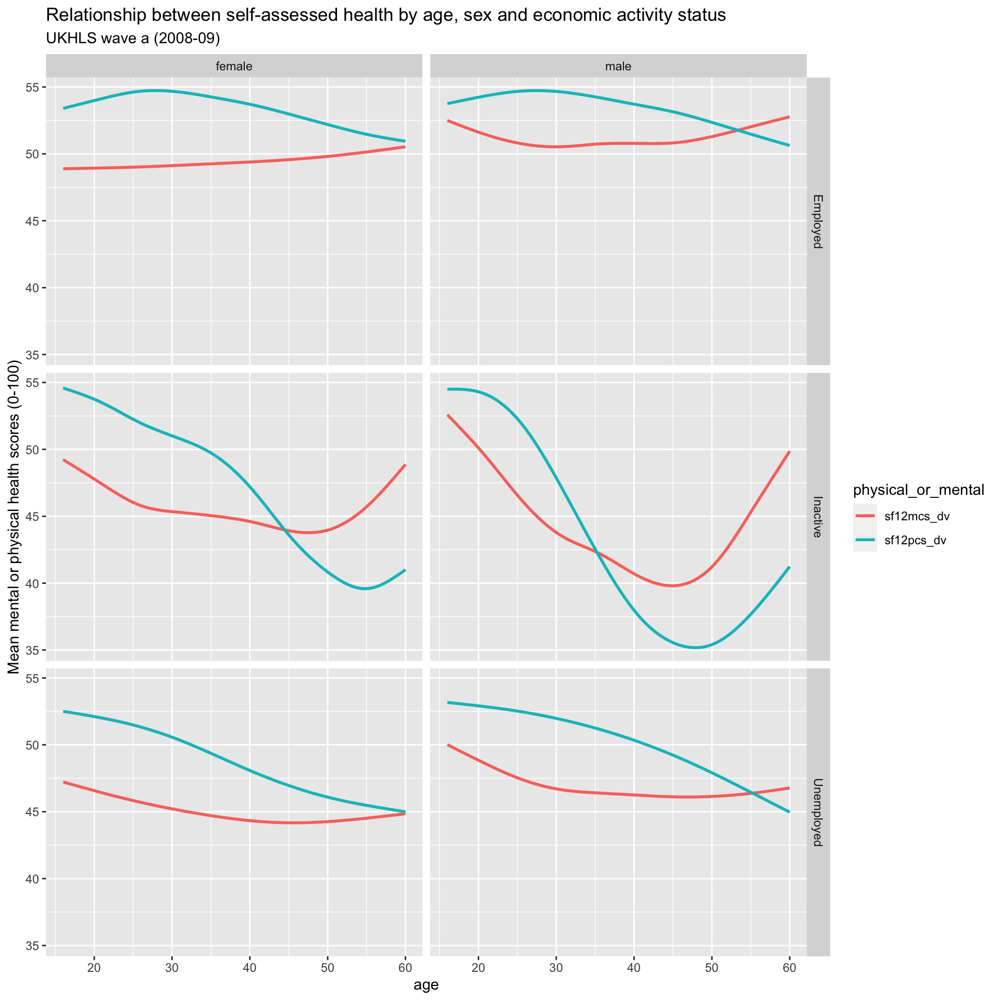

Code
library(tidyverse)
library(haven)
library(here)
devtools::load_all(here('R'))This notebook will be used to explore SF12 relationships, such as with age.
library(tidyverse)
library(haven)
library(here)
devtools::load_all(here('R'))base_dir_location <- "big_data/UKDA-6614-stata/stata/stata13_se/ukhls"
indresp_files <- dir(here(base_dir_location), pattern = "[a-z]_indresp.dta", full.names = TRUE)econ_act_groups <- readxl::read_excel(path = here("data/economic_activities_categories.xlsx"), sheet = 'categories') %>%
janitor::clean_names()What to extract (and in which format)
varnames <- c(
"jbstat", "dvage", "sex", "hiqual_dv", "hhtype_dv",
"ethn_dv", # ethnicity
"jbsat", #job satisfaction
"wkaut1", # autonomy measures
"wkaut2",
"wkaut3",
"wkaut4",
"wkaut5",
"jbsec", # job security
"scghq1_dv", # ghq sum of Likert scale items (?) (0-36)frtg# jm
"scghq2_dv", # ghq caseness (0-12)
"sf12mcs_dv", # SF-12 Mental Component Summary - (0-100)
"sf12pcs_dv" #SF-12 physical component summary - (0-100)
)
extract_what <- c(
"labels", "values",
"labels", "labels", "labels",
"labels", "values",
"values", "values", "values", "values", "values",
"values",
"values", "values", "values", "values"
)overall_start_time = Sys.time()
long_slimmed_datalist <- lapply(indresp_files,
read_and_slim_data,
varnames = varnames,
extract_what = extract_what,
verbose = TRUE
)[1] "extracting file: /Users/JonMinton/repos/economic_inactivity/big_data/UKDA-6614-stata/stata/stata13_se/ukhls/a_indresp.dta"
[1] "Attempting to find 17 variables"
[1] "WARNING! Only 11 of the 17 requested have been found"
[1] "read file in 0.319211959838867 seconds"
[1] "slimming file..."
[1] "extracted 11 variables in 0.384058952331543 seconds"
[1] "extracting file: /Users/JonMinton/repos/economic_inactivity/big_data/UKDA-6614-stata/stata/stata13_se/ukhls/b_indresp.dta"
[1] "Attempting to find 17 variables"
[1] "All variables requested found"
[1] "read file in 0.439641952514648 seconds"
[1] "slimming file..."
[1] "extracted 17 variables in 0.744669914245605 seconds"
[1] "extracting file: /Users/JonMinton/repos/economic_inactivity/big_data/UKDA-6614-stata/stata/stata13_se/ukhls/c_indresp.dta"
[1] "Attempting to find 17 variables"
[1] "WARNING! Only 11 of the 17 requested have been found"
[1] "read file in 0.628750801086426 seconds"
[1] "slimming file..."
[1] "extracted 11 variables in 0.355957984924316 seconds"
[1] "extracting file: /Users/JonMinton/repos/economic_inactivity/big_data/UKDA-6614-stata/stata/stata13_se/ukhls/d_indresp.dta"
[1] "Attempting to find 17 variables"
[1] "All variables requested found"
[1] "read file in 0.453049898147583 seconds"
[1] "slimming file..."
[1] "extracted 17 variables in 0.60391902923584 seconds"
[1] "extracting file: /Users/JonMinton/repos/economic_inactivity/big_data/UKDA-6614-stata/stata/stata13_se/ukhls/e_indresp.dta"
[1] "Attempting to find 17 variables"
[1] "WARNING! Only 11 of the 17 requested have been found"
[1] "read file in 0.523977994918823 seconds"
[1] "slimming file..."
[1] "extracted 11 variables in 0.325090169906616 seconds"
[1] "extracting file: /Users/JonMinton/repos/economic_inactivity/big_data/UKDA-6614-stata/stata/stata13_se/ukhls/f_indresp.dta"
[1] "Attempting to find 17 variables"
[1] "All variables requested found"
[1] "read file in 0.437481880187988 seconds"
[1] "slimming file..."
[1] "extracted 17 variables in 0.579389095306396 seconds"
[1] "extracting file: /Users/JonMinton/repos/economic_inactivity/big_data/UKDA-6614-stata/stata/stata13_se/ukhls/g_indresp.dta"
[1] "Attempting to find 17 variables"
[1] "WARNING! Only 11 of the 17 requested have been found"
[1] "read file in 0.486914873123169 seconds"
[1] "slimming file..."
[1] "extracted 11 variables in 0.372834920883179 seconds"
[1] "extracting file: /Users/JonMinton/repos/economic_inactivity/big_data/UKDA-6614-stata/stata/stata13_se/ukhls/h_indresp.dta"
[1] "Attempting to find 17 variables"
[1] "All variables requested found"
[1] "read file in 0.391740083694458 seconds"
[1] "slimming file..."
[1] "extracted 17 variables in 0.461183071136475 seconds"
[1] "extracting file: /Users/JonMinton/repos/economic_inactivity/big_data/UKDA-6614-stata/stata/stata13_se/ukhls/i_indresp.dta"
[1] "Attempting to find 17 variables"
[1] "WARNING! Only 11 of the 17 requested have been found"
[1] "read file in 0.470518112182617 seconds"
[1] "slimming file..."
[1] "extracted 11 variables in 0.278790950775146 seconds"
[1] "extracting file: /Users/JonMinton/repos/economic_inactivity/big_data/UKDA-6614-stata/stata/stata13_se/ukhls/j_indresp.dta"
[1] "Attempting to find 17 variables"
[1] "All variables requested found"
[1] "read file in 0.447364091873169 seconds"
[1] "slimming file..."
[1] "extracted 17 variables in 0.412255048751831 seconds"
[1] "extracting file: /Users/JonMinton/repos/economic_inactivity/big_data/UKDA-6614-stata/stata/stata13_se/ukhls/k_indresp.dta"
[1] "Attempting to find 17 variables"
[1] "WARNING! Only 11 of the 17 requested have been found"
[1] "read file in 0.447106122970581 seconds"
[1] "slimming file..."
[1] "extracted 11 variables in 0.248836040496826 seconds"
[1] "extracting file: /Users/JonMinton/repos/economic_inactivity/big_data/UKDA-6614-stata/stata/stata13_se/ukhls/l_indresp.dta"
[1] "Attempting to find 17 variables"
[1] "All variables requested found"
[1] "read file in 0.361983060836792 seconds"
[1] "slimming file..."
[1] "extracted 17 variables in 0.444123029708862 seconds"long_slimmed_data <- bind_rows(long_slimmed_datalist)
overall_end_time = Sys.time()
print(paste(
"Overall process took",
difftime(overall_end_time, overall_start_time, units = "mins"),
"minutes"
))[1] "Overall process took 0.183508050441742 minutes"rm(long_slimmed_datalist)
long_slimmed_data# A tibble: 7,058,281 × 4
pidp wave variable value
<dbl> <chr> <chr> <chr>
1 68001367 a sex male
2 68004087 a sex male
3 68006127 a sex female
4 68006135 a sex female
5 68006807 a sex female
6 68007487 a sex female
7 68007491 a sex male
8 68007495 a sex male
9 68007499 a sex male
10 68008167 a sex female
# ℹ 7,058,271 more rowsRecode highest qualification and economic activity status
long_slimmed_data <-
long_slimmed_data %>%
left_join(
econ_act_groups %>% select(original, recoded = level_2_meso),
by = c('value' = 'original')
) %>%
mutate(
value = ifelse(!is.na(recoded), recoded, value)
) %>%
select(-recoded) %>%
mutate(
highqual = case_when(
value %in% c("A level etc", "A-level etc") ~ "A-level etc",
value %in% c("No qual", "No qualification") ~ "No qualification",
value %in% c("Other higher", "Other higher degree") ~ "Other higher degree",
value %in% c("Other qual", "Other qualification") ~ "Other qualification",
value == "Degree" ~ "Degree",
value == "GCSE etc" ~ "GCSE etc",
value %in% c("inapplicable", "missing") ~ "Inapplicable or missing",
TRUE ~ NA_character_
)
) %>%
mutate(
# Now going to make this three levels only
simplified_highest_qualification = case_when(
highqual == "No qualification" ~ "No qualification",
highqual %in% c("GCSE etc", "Other qualification", "A-level etc") ~ "Intermediate qualifications",
highqual %in% c("Degree", "Other higher degree") ~ "Degree or above",
TRUE ~ NA_character_
)
) %>%
mutate(
value = ifelse(!is.na(simplified_highest_qualification), simplified_highest_qualification, value)
) %>%
select(-highqual, -simplified_highest_qualification)
long_slimmed_data# A tibble: 7,058,281 × 4
pidp wave variable value
<dbl> <chr> <chr> <chr>
1 68001367 a sex male
2 68004087 a sex male
3 68006127 a sex female
4 68006135 a sex female
5 68006807 a sex female
6 68007487 a sex female
7 68007491 a sex male
8 68007495 a sex male
9 68007499 a sex male
10 68008167 a sex female
# ℹ 7,058,271 more rowsFigure 1 shows something…
long_slimmed_data %>%
filter(wave == "b") %>%
pivot_wider(names_from = variable, values_from = value) %>%
select(pidp, sex, dvage, jbstat, contains("sf12")) %>%
mutate(sf12pcs_dv = as.numeric(sf12pcs_dv), sf12mcs_dv = as.numeric(sf12mcs_dv)) %>%
mutate(jbstat = ifelse(jbstat == "Missing", NA, jbstat)) %>%
filter(!is.na(jbstat)) %>%
mutate(sf12pcs_dv = ifelse(sf12pcs_dv < 0, NA, sf12pcs_dv), sf12mcs_dv = ifelse(sf12mcs_dv < 0, NA, sf12mcs_dv)) %>%
mutate(dvage = as.numeric(dvage)) %>%
filter(between(dvage, 16, 60)) %>%
pivot_longer(cols = contains("sf12"), names_to = "physical_or_mental", values_to = "value") %>%
ggplot(aes(x = dvage, y = value, group = physical_or_mental, colour = physical_or_mental)) +
# geom_point(alpha = 0.1 )+
stat_smooth(se = FALSE) +
facet_grid(jbstat ~ sex) +
labs(
x = "age",
y = "Mean mental or physical health scores (0-100)",
title = "Relationship between self-assessed health by age, sex and economic activity status",
subtitle = "UKHLS wave a (2008-09)"
)
And save…
ggsave(here('figures/sf_mean_scores_by_age_wave_a.png'), units = "cm", width = 20, height = 15, dpi = 300)